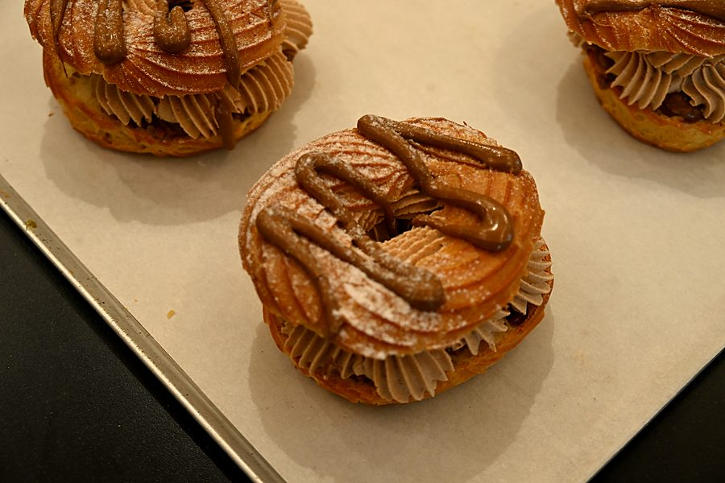
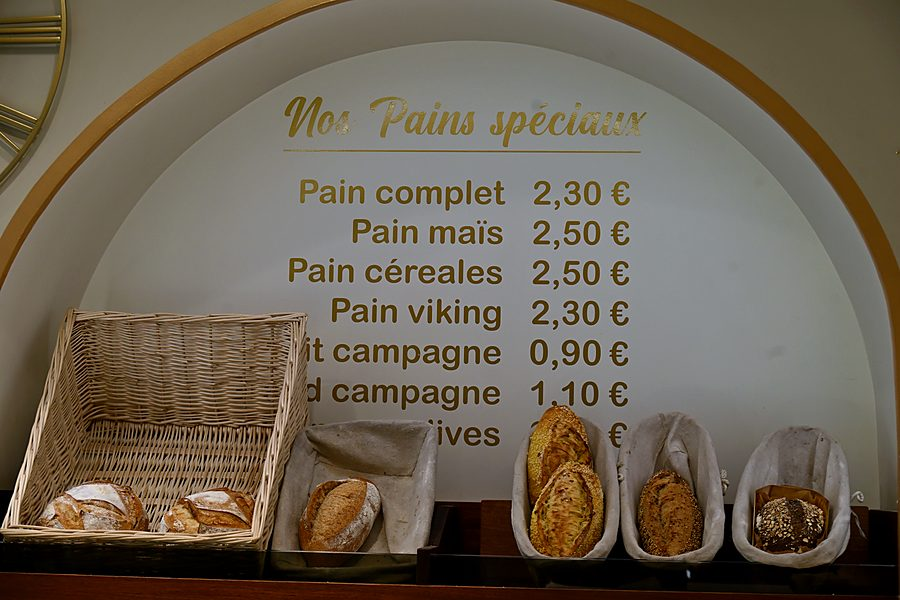
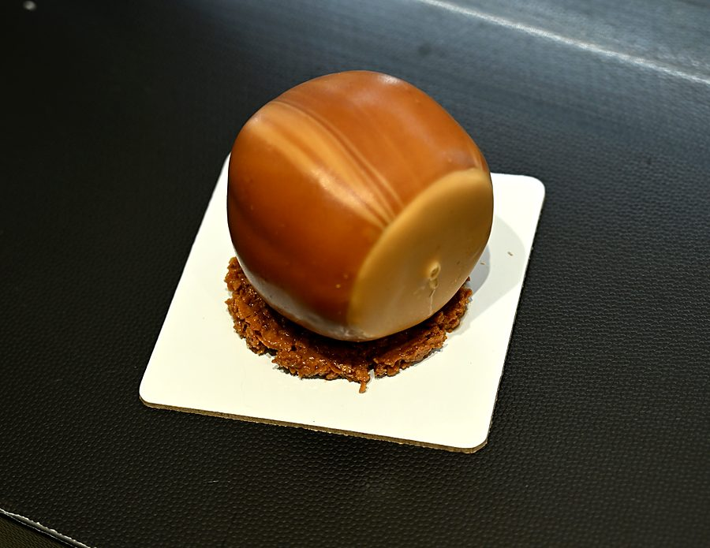
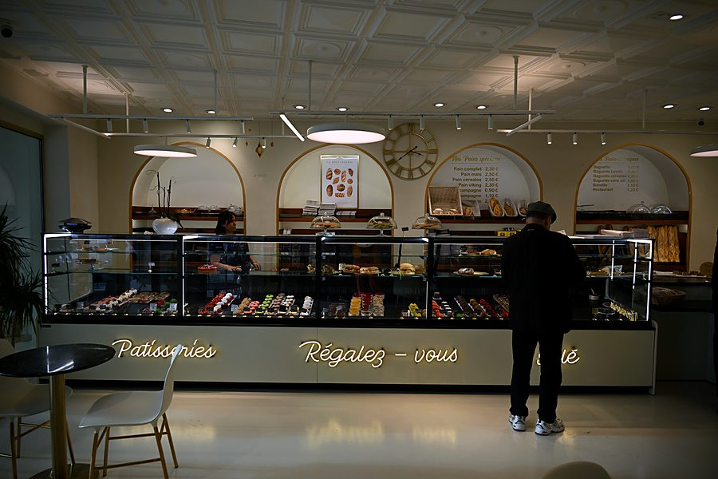
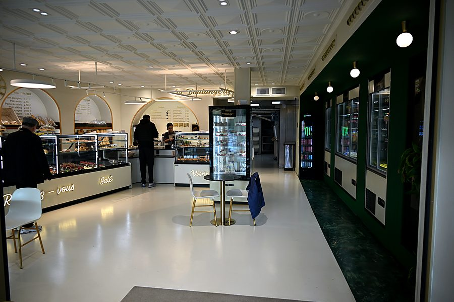

Savoir-faire
Le geste de l'artisan, chaque jour
Du pétrin à la vitrine : comment naissent nos pains et nos pâtisseries.
Le pain
Du temps, et de la patience
Un bon pain, c'est d'abord une question de temps. Baguette classique, baguette au levain, aux céréales, sans sel, banette, pains de campagne et pains spéciaux : chaque recette a son rythme.
Le levain apporte une mie plus dense et une légère acidité ; les céréales et les graines, du croquant et du goût. Résultat : une gamme de treize pains, du quotidien aux envies du week-end.
Voir nos pains et leurs prix
- 1
Le pétrissage
Farine, eau, sel, levure ou levain : la pâte prend corps et développe sa structure.
- 2
Le pointage
On laisse reposer : c'est le temps de la fermentation qui donne au pain ses arômes.
- 3
Le façonnage
Chaque pâton est mis en forme à la main : baguette, banette, campagne, pain spécial.
- 4
La cuisson
Au four, la croûte dore et chante en refroidissant. Le pain est prêt pour la vitrine.

La pâtisserie
L'art du trompe-l'œil
Un trompe-l'œil, c'est une pâtisserie qui imite un fruit ou un objet au point de s'y méprendre. Derrière l'effet, un vrai travail de précision.
Moulage, montage, glaçage, puis les détails : la texture d'une coque de cacahuète, le reflet d'une noisette, les alvéoles d'une framboise. À côté, les grands classiques gardent toute leur place : fraisier, tarte aux framboises, Paris-Brest.
Voir nos pâtisseries- 1
La base
Un sablé, un biscuit ou une pâte à choux : le socle qui apporte le croquant.
- 2
Le cœur
Mousse, crème, insert fruité ou praliné : le goût, à l'intérieur.
- 3
Le glaçage
Coulé ou pulvérisé, il donne la couleur et l'illusion : fruit, coque, dôme.
- 4
Les finitions
Relief, éclats, sucre glace, détails posés un à un : le trompe-l'œil prend vie.
Le snacking
Préparé pour le midi
Sandwichs garnis sur nos pains, pizzas, lasagnes, aïoli, boulettes de viande… Le midi, la boulangerie devient une adresse où bien manger, rapidement et sans se ruiner.
La carte snacking & traiteur

Le meilleur moyen de comprendre ? Goûter.
Passez en boutique, l'équipe vous conseillera.